기계가공기능장 (2002-07-21 기출문제)
1과목: 임의 구분
1. 압축공기 윤활기의 원리는?
- 벤투리의 원리
- 연속의 법칙
- 베르누이의 원리
- 파스칼의 원리
(정답률: 48%)

2. 유압 실린더의 출력을 가장 올바르게 설명한 것은?
- 유압 실린더에 공급된 압력
- 유압 실린더 튜브에 작용하는 힘
- 피스톤 로드에 의해 전달되는 기계적인 힘
- 유압 실린더 헤드가 받는 힘의 중량
(정답률: 81%)
3. 다음 그림에 해당되는 용어는?
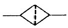
- 에어드라이어
- 필터
- 드레인 배출기
- 열 교환기
(정답률: 88%)
4. 공기압 장치 중 공기압회로의 이물질을 제거하는 장치를 무엇이라고 하는가?
- 윤활기
- 필터
- 조절기
- 에어탱크
(정답률: 95%)
5. 다음 기호의 명칭으로 올바른 것은?
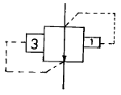
- 파일럿 작동형 시퀀스밸브
- 무부하 릴리프밸브
- 일정비율 감압밸브
- 브레이크밸브
(정답률: 60%)
6. 일감의 평면이나 원주면에 정확한 간격으로 구멍을 뚫거나 다른 기계가공 작업에 사용하기 위하여 필요한 지그는?
- 리프지그
- 분할지그
- 채널지그
- 박스지그
(정답률: 42%)
7. 다음 중 드릴지그를 구성하는 3대 요소에 해당되지 않는 것은?
- 위치결정
- 체결
- 공구의 안내
- 공작물 받침대
(정답률: 59%)
8. 4개의 링크로 된 연쇄에서 그 순간 중심의 총수는?
- 4개
- 2개
- 6개
- 8개
(정답률: 40%)
9. 다음 중 드릴 지그 설계 순서를 기술한 것이다. 이중 가장 우선적으로 고려하여야 할 사항은?
- 지그의 높이와 두께 결정
- 부싱의 외경 결정
- 부싱의 내경 결정
- 드릴 지름의 결정
(정답률: 74%)
10. 원통체 공작물의 위치 결정 방법 중 중심을 항상 동일 위치에 설치되도록 지지하는 방법은?
- 척 지지구
- 평면 지지구
- 직각 지지구
- V-Block 지지구
(정답률: 63%)
11. 광파간섭 현상을 이용한 측정기는?
- 공구현미경
- 오토콜리메이터
- 옵티컬플랫
- NF식 표면거칠기 측정기
(정답률: 60%)
12. 미터 나사에 대해 와이어의 지름 d=2.866mm의 3침을 사용하여 마이크로미터의 측정값 M=49.085mm를 얻었다. 이 나사의 유효지름은 몇 mm인가? (단, 피치 P는 2mm이다.)
- 34.755
- 36.219
- 38.755
- 42.219
(정답률: 45%)
13. 테스트 인디케이터와 비교할 때 다이얼 게이지의 특징이 아닌 것은?
- 측정범위가 넓다.
- 타원 측정이 용이하다.
- 직접 측정이 편리하다.
- 동적 측정이 가능하다.
(정답률: 55%)
14. N.P.L식 각도 게이지의 설명 중 틀린 것은?
- 게이지면을 반사면으로 사용하면 각도의 비교측정이 가능하다.
- 블록게이지와 같이 밀착하여 사용할 수 있다.
- 게이지 하나하나 및 조립후의 정도는 약 3∼6"가 된다.
- 조합할 때 홀더가 필요하다.
(정답률: 32%)
15. 1/20mm 버니어 캘리퍼스의 주척(어미자)과 부척(아들자)의 관계를 설명한 것 중 옳은 것은?
- 주척이 1눈금이 1mm, 부척의 눈금이 12mm를 25등분 한 것.
- 주척의 1눈금이 1mm, 부척의 눈금이 19mm를 20등분 한 것.
- 주척의 1눈금이 0.5mm, 부척의 눈금이 19mm를 25등분 한 것.
- 주척의 1눈금이 0.5mm, 부척의 눈금이 24mm를 25등분 한 것.
(정답률: 70%)
16. CAD 시스템의 입력장치 중 화면에 접촉하여 명령어 선택이나 좌표입력이 가능한 것은?
- 트랙 볼
- 라이트 펜
- 조이스틱
- 태블릿
(정답률: 63%)
17. 지역 통신망(LAN)시스템의 주요 특징이 아닌 것은?
- 가격면에서 저렴한 정보통신 시스템이다.
- 정보 통신망 구성요소 간에 신뢰성이 높다.
- 신규장비를 전송매체로 첨가하기가 어렵다.
- 자료의 전송속도가 빠르다.
(정답률: 84%)
18. CNC선반의 프로그램에서 G27의 의미는?
- 밀리(mm) 자료입력
- 인치(Inch) 자료입력
- 자동 원점 복귀
- 기계 원점 복귀 확인
(정답률: 73%)
19. 머시닝센터에서 4날 - ø 30 엔드밀을 사용하여 SM45C를 가공하고자 한다. 가공 프로그램에 얼마의 이송량으로 지령해야 가장 적당한가? (단, SM45C의 절삭속도는 80m/min, 공구의 날당 이송량은 0.5mm 이다.)
- 1200 mm/min
- 1500 mm/min
- 1700 mm/min
- 1900 mm/min
(정답률: 50%)
20. 현재 각종 CNC 공작기계에 이용되고 있는 서보제어방식은 다음의 4가지로 분류될 수 있다. 정밀도가 높은 순서에서 낮은 순서로 나열된 것은?
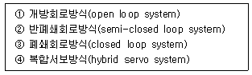
- ④ - ③ - ② - ①
- ① - ② - ③ - ④
- ④ - ② - ③ - ①
- ④ - ② - ① - ③
(정답률: 54%)
2과목: 임의 구분
21. 다음은 물류시스템을 구성하는 서보시스템이다. 해당 사항이 아닌 것은?
- 보관시스템
- 수송시스템
- 가공시스템
- 하역시스템
(정답률: 78%)
22. 자동화 시스템을 구성할 때 주요 3요소에 해당되지 않는 것은?
- 센서
- 프로세서
- 액추에이터
- 소프트웨어
(정답률: 48%)
23. 다음 실린더 기호의 명칭을 설명한 것 중 옳은 것은?
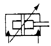
- 램형실린더
- 단동 텔레스코프형 실린더
- 스프링붙이 복동 실린더
- 쿠션붙이 복동 실린더
(정답률: 45%)
24. 다음 중에서 부르동관에 대한 설명 중 가장 옳은 것은?
- 압력을 검출하는데 사용된다.
- 유량을 검출하는데 사용된다.
- 온도을 검출하는데 사용된다.
- 유속을 검출하는데 사용된다.
(정답률: 40%)
25. 기계적스위치가 -,ON-OFF할때 순간적인 상태에서 스위치의 접점이 단시간 이내에 단속한 후 최후 ON 또는 OFF로 낙착되는 현상을 채터라고 한다. 채터에 대한 설명중 틀린 것은?
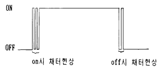
- 리드스위치, 토글스위치, 로터리스위치 등의 접점스위치는 모두 채터가 나타난다.
- 강전회로에서의 채터는 응답이 빠르지 않아 무시해도 된다.
- 전자 회로에서는 오동작의 원인이 된다.
- 트랜지스터나 IC회로에서도 채터가 발생된다.
(정답률: 28%)
26. ø30mm 드릴로 연강판에 90mm 깊이의 구멍을 뚫을려고 한다. 길이방향 이송을 0.1 mm/rev으로 하고 드릴 끝 원추 각도를 118° 로 한다면 소요되는 시간은? (단, 절삭속도는 20m/min으로 한다.)
- 2분 23초
- 3분 13초
- 3분 33초
- 4분 40초
(정답률: 18%)
27. 다음 레이저(LASER)가공의 특징 설명 중 틀린 것은?
- 비접촉 가공으로 공구마모가 없다.
- 자동 가공이 가능하다.
- 높은 에너지를 집중시킴으로써 열에 의한 변형이 많다.
- 금속 및 비금속 어느 재료라도 가공이 가능하다.
(정답률: 67%)
28. 블록게이지(Block gauge)를 제작하려 한다. 최종 다듬질은 어떤 가공을 하는가?
- 방전가공
- 래핑
- 수퍼피니싱
- 액체호닝
(정답률: 80%)
29. 보통 호빙머신으로 깎을수 없는 기어는 다음의 어느 것인가?
- 스퍼기어(spur gear)
- 헬리컬 기어(helical gear)
- 웜 기어(worm gear)
- 베벨기어(bevel gear)
(정답률: 37%)
30. 연삭작업에서 연삭력 P = 15kg, 절삭속도 V = 35m/sec 일때 연삭동력은 얼마인가? (단, 기계효율은 100%로 가정한다.)
- 0.12 PS
- 3 PS
- 0.63 PS
- 7 PS
(정답률: 12%)
31. 센터리스 연삭기계에서 조정 숫돌차의 바깥지름이 300mm이고 회전수가 25rpm,경사각이 5° 라면 1분간의 이동 속도는?
- 6.52 m/min
- 8.86 m/min
- 2.⑤ m/min
- 4.45 m/min
(정답률: 40%)
32. 평밀링 커터에 의한 절삭에서 1개의 날이 깍아내는 칩의 두께를 구하는 식을 나타낸 것은? (단, 절삭부의 폭을 b, 절삭깊이를 d, 테이블의 매분당 이송을 f, 커터의 외경을 D, 회전수(rpm)를 n, 날의 수를 Z로 한다.)
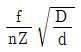
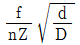
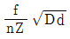
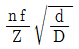
(정답률: 67%)
33. 밀링머신에서 원주를
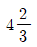
씩으로 등분하려면 다음 어느 방법이 적당한가?- 18개 구멍자리에 4구멍씩 회전
- 18개 구멍자리에 14구멍씩 회전
- 27개 구멍자리에 4구멍씩 회전
- 27개 구멍자리에 14구멍씩 회전
(정답률: 24%)
34. 길이 200mm, 지름 20mm인 둥근 공작물을 절삭속도 80m/min로 1회 선삭하려면 절삭시간은 약 얼마나 걸리는 가? (단, 이송속도는 0.1 mm/rev이다.)
- 3.1분
- 5.2분
- 0.5분
- 1.6분
(정답률: 52%)
35. 선반작업을 할 때 가공물의 중심을 구하는 방법이다. 적당한 방법이 아닌 것은?
- 센터링 머신을 사용한다.
- 브이블록(V-Block)과 서피스 게이지를 사용한다.
- 버니어 캘리퍼스를 사용한다.
- 센터링자를 사용한다.
(정답률: 77%)
36. 선반작업에서 비절삭저항이 ks[kgf/mm2] 인 피삭재를 절삭속도 V[m/min]로 절삭면적이 F[mm2]가 되게 가공할 때 공구에 걸리는 절삭동력 N[PS]은?
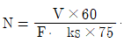
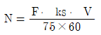
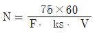
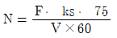
(정답률: 60%)
37. 다음 내용은 세라믹공구(ceramic tool)에 대하여 설명한 것이다. 틀린 것은?
- 산화알루미늄의 미분말을 소결한 재료이다.
- 고속절삭이 가능하다.
- 충격에 약하다.
- 경도와 인성이 높다.
(정답률: 72%)
38. 테일러(Taylor)의 공구 수명 방정식은 다음 중 어느 것인가? (단, V:절삭속도, T:공구수명, n:속도곡선의 지수, C:상수 이다.)
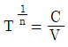
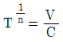
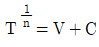
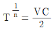
(정답률: 45%)
39. 절삭제를 사용함으로써 절삭 저항을 감소 시킨다. 다음 사항 중 틀린 것은?
- 절삭 칩의 접촉 길이가 감소하므로
- 소비동력이 적어지므로
- 날 끝과 칩, 다듬면 사이의 윤활 작용으로
- 마찰이 적어지므로
(정답률: 44%)
40. 다음 절삭율을 나타내는 것으로 올바른 것은?
- 절삭속도 × 절삭깊이
- 절삭속도 × 이송
- 절삭속도 × 절삭면적
- 절삭깊이 × 매분회전수
(정답률: 62%)
3과목: 임의 구분
41. 다음은 기계 작업에서의 안전수칙을 나타낸 것이다. 틀린 것은?
- 기계 위의 칩은 손으로 만져서는 안된다
- 이송을 걸어 놓은 채 기계를 정지해 두어서는 안된다
- 절삭공구는 길게 설치하고 절삭성이 나쁘면 곧 바꾼다
- 칩이 비산할 때는 보호 안경을 사용한다
(정답률: 89%)
42. 주철을 절삭할 때 일반적인 칩의 형태는?
- 전단형
- 경작형
- 균열형
- 유동형
(정답률: 46%)
43. 절삭저항은 3분력으로 나눌 수 있다. 이에 속하지 않는 것은?
- 주분력
- 종분력
- 횡분력
- 배분력
(정답률: 86%)
44. 다음 속도열 중에서 직경이 작은 곳에서도 회전수의 간격이 밀집되어 있지 않고 하강율이 일정한 속도열은 어느 것인가?
- 등차 급수 속도열
- 등비 급수 속도열
- 대수 급수 속도열
- 역비 급수 속도열
(정답률: 45%)
45. 공작기계의 직선운동기구에 사용되는 유압식 기구의 장점이 아닌 것은?
- 무단 변속이 가능하다.
- 충격과 진동이 적은 운전이 가능하다.
- 과부하에 대하여 파괴될 우려가 적다.
- 전동비가 일정하게 유지된다.
(정답률: 24%)
46. 정(Chisel)을 그라인더 휠에서 연삭할 때 주의할 점을 옳게 말한 것은?
- 상온에서 절단하는 평정의 날끝은 60° 로 연마한다
- 연마할 때 청색으로 변하면 힘을 적당히 주어 잘 연마한다
- 정은 항상 머리부분을 평편하게 연마하여야 한다
- 너무 힘을 주어 연마하면 과열되어 담금질 강도가 증가한다
(정답률: 64%)
47. 프레스의 작업시작전 점검사항으로 가장 중요한 것은?
- 기계의 공유 유무를 확인한다.
- 전원의 단전 유무를 확인한다.
- 클러치 상태를 점검한다.
- 상하 형틀의 클리어런스를 점검한다.
(정답률: 81%)
48. 금속재료 중 공업용으로 가장 많이 사용되는 금속의 성질 중 관계없는 것은?
- 취성
- 강도
- 연성
- 경도
(정답률: 65%)
49. 텅스텐에 탄소를 소결한 합금으로 내마모성이 우수하며 대량 생산용으로 적당한 금형재료는?
- 함금공구강
- 고속도강
- 초경합금
- 다이스강
(정답률: 43%)
50. 탄소(C)를 0.2∼0.3% 함유하며 건축,조선,교량 기계부품 제작에 널리 사용하는 강은?
- 반연강
- 반경강
- 경강
- 최경강
(정답률: 40%)
51. 고속도강을 담금질 한 후 뜨임은 몇 도(℃)에서 하는가?
- 450∼500
- 550∼600
- 650∼700
- 750∼800
(정답률: 58%)
52. Al-Si-Ni합금에 2-4% Cu를 첨가한 합금을 무엇이라고 하는가?
- 알코아
- 로엑스
- 라우탈
- Y합금
(정답률: 29%)
53. 내약품성, 내부식성이 우수하여 화학공업용 펌프,디젤기관의 밸브, 증기터빈의 날개 등에 널리 쓰이는 니켈합금은?
- 합금 콘스탄탄
- 합금 모넬메탈
- 양백
- 알루멜
(정답률: 40%)
54. 소결 산화물 공구인 세라믹 공구의 주성분은?
- Co-Cr-W-C
- Al2O3
- W-Cr-V-Fe-C
- Fe-C-Cr
(정답률: 62%)
55. 공급자에 대한 보호와 구입자에 대한 보증의 정도를 규정해 두고 공급자의 요구와 구입자의 요구 양쪽을 만족하도록 하는 샘플링 검사방식은?
- 규준형 샘플링 검사
- 조정형 샘플링 검사
- 선별형 샘플링 검사
- 연속생산형 샘플링 검사
(정답률: 24%)
56. 표는 어느 회사의 월별 판매실적을 나타낸 것이다. 5개월 이동평균법으로 6월의 수요를 예측하면?
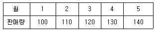
- 150
- 140
- 130
- 120
(정답률: 67%)
57. u 관리도의 공식으로 가장 올바른 것은?
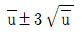
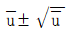
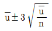
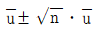
(정답률: 67%)
58. 도수분포표를 만드는 목적이 아닌 것은?
- 데이터의 흩어진 모양을 알고 싶을 때
- 많은 데이터로부터 평균치와 표준편차를 구할 때
- 원 데이터를 규격과 대조하고 싶을 때
- 결과나 문제점에 대한 계통적 특성치를 구할 때
(정답률: 46%)
59. 설비의 구식화에 의한 열화는?
- 상대적 열화
- 경제적 열화
- 기술적 열화
- 절대적 열화
(정답률: 32%)
60. 모든작업을 기본동작으로 분해하고 각 기본동작에 대하여 성질과 조건에 따라 정해놓은 시간치를 적용하여 정미시간을 산정하는 방법은?
- PTS법
- WS법
- 스톱워치법
- 실적기록법
(정답률: 65%)